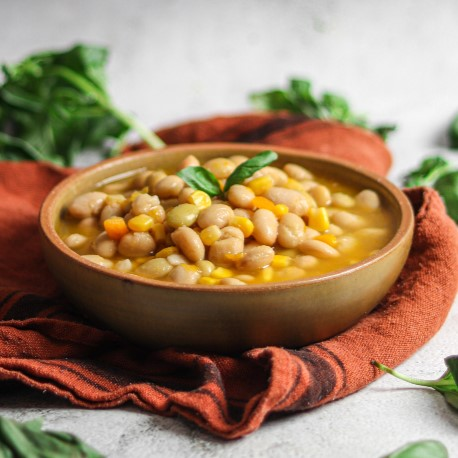

"Descubre la excelencia culinaria con nuestros platos fuertes de la casa, destacados por sabores intensos y presentación impecable. Sumérgete en una variedad única de mariscos y auténtica comida tradicional, una experiencia gastronómica que deleitará tus sentidos."
"Descubre la calidez de nuestro acogedor espacio, donde podrás relajarte y deleitarte con la auténtica gastronomía local. Cada plato cuenta una historia única de sabores que crea momentos inolvidables."